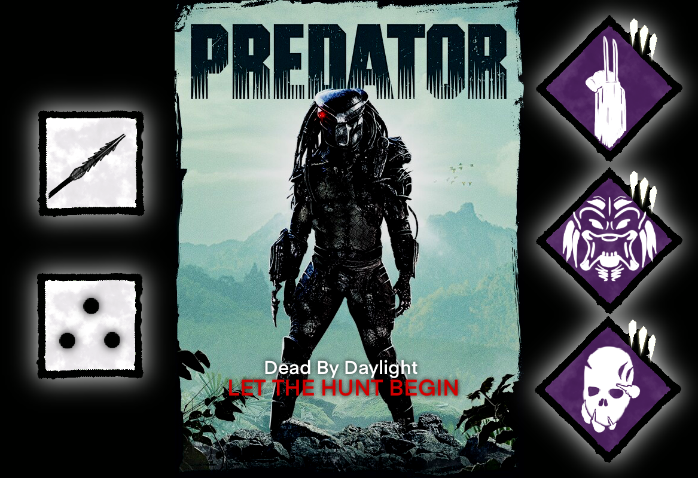
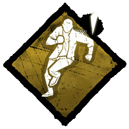
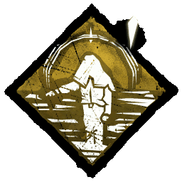

IDEAS
Here you can find ideas and inspiration for Dead By Daylight game.
NEW KILLERS

Predator is an iconic character. He is an alien which is hunting humans. This creature would be perfect killer to add to the game, which will perfectly match to game theme. Below will be suggestions about the skills and perks of this character.
There is also many predator movies avaiable to watch, so if you would like to have closer look at this creature, I recommend you to watch this great movies in order to know the lore of this character.
PREDATOR ABILITIES
Telescoping Spear - Press and hold the Power Button to get ready for the spear throw. Release button to throw a spear. When you hit a survivor, he gets injured and will have spear in his chest, and you will have killer instict on this survivor as long as he has this spear. If you miss, the spear will stay in place where you throw it. You will be able to collect this spear in order to use it again, or wait 30 secound to make this spear automaticly return to you (collecting spear action takes 1.5 second).
Survivors can perform taking this spear out of thier chests. They can do it even while running. When they finish this action, spear will stay in the place where survivor finished this action, and they will suffer from deep wound status effect.
If you hit injured survivors with the spear, they will be put into dying state. And you will have to wait 30 second for the spear to get back.
Hunting Mode - When ability is ready, press the Active Ability Button to turn on hunting mode for 60 second. During hunting mode you are invisible (like the Wraith) and you do not have terror radius, but you are unable to attack other survivors during this ability and you are moving 20% slower. You still are able to do breaking actions.
While ability is active, you can mark survivor with you laser by clicking Ability Button (even from a great distance). After marking a survivor, he will see 3 red dots above his head as an alert. When you mark survivor, your weapon gets ready to fire at him. After 4 second it will fire and if survivor is in a clear sight he is putting into dying state, even if he is full health state. After completing firing action, hunting mode turns off.
The survivor during this time has time to hide behind something. If he can hide well, the shot will not hit him. If the survivor hides behind a destructible obstacle (pallet or breakable wall), that obstacle will be destroyed instead of hitting survivor.
PREDATOR PERKS
Penetrating Attack - "Your attacks are so deep and stabbing that your enemies will not recover that fast".
Your basic attacks inflict deep wound status effect.
Battle Roar - "Your roar is so terrifying and loud that it gives your opponents goosebumps".
When breaking pallet or wall, every survivor that is more then 40 meters from you will scream, revealing their location, and they will be hearing terror radius sound effect for 10 seconds. (60 second cooldown)
Dream Snack - "You have tasted the blood of each of your victims. Now it is the time to choose whos going to be your snack".
After hooking every survivor at least once, this perk becomes active. When perk is active, you grant the ability to kill one survivor in the dying state, even if he has not reached second hook stage. After killing a survivor, this perk deactivates.
PERKS REWORK
Here you can find perks rework propositions:
| PERK | NOW | NEW PROPOSITION |
|---|---|---|
|  | Dead Hard activates after being unhooked or unhooking yourself. | Dead Hard activates after being unhooked or unhooking yourself and after taking protection hit. |
|  | All Survivors benefit from the following effects when inside the Boon Totem's radius: 2% Haste Status Effect. This effect lingers for 2/3/4 seconds after leaving the Boon Totem's range. | All Survivors inside the Boon Totem's radius: gets rid of and become immune to negative status effect such as Blindness, Hindered, Oblivious and Exposed. |
| After triggering your third Protection Hit, Mettle of Man activates | After triggering your secound Protection Hit, Mettle of Man activates |